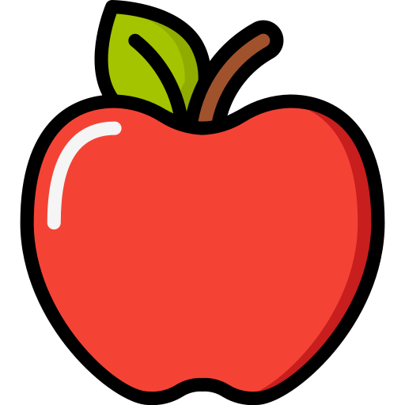

Welcome to the Snike!
Follow this tutorial to learn how to play and master the game.
Game Components
Get familiar with the different parts of the game.
Game Board
The area where the snake moves and eats apples.
Score Board
Displays the current score.
Speed Indicator
Shows the current speed level of the snake.
Apple Types
Discover the different types of apples in the game.
Normal Apple
Increases the snake's size and score.
RedSpeed Apple
Increases the snake's speed.
YellowLucky Apple
Has special effects; discover them by playing!
GreenHow to Play
Use the arrow keys on your keyboard to control the direction of the snake
Objectives

Quest for Apples
- Eat Apples to Grow Longer: Devour juicy apples to increase your score and grow your snake's length.

Avoid Deadly Obstacles
- Steer clear of yourself and the game board boundaries to keep playing and stay alive.